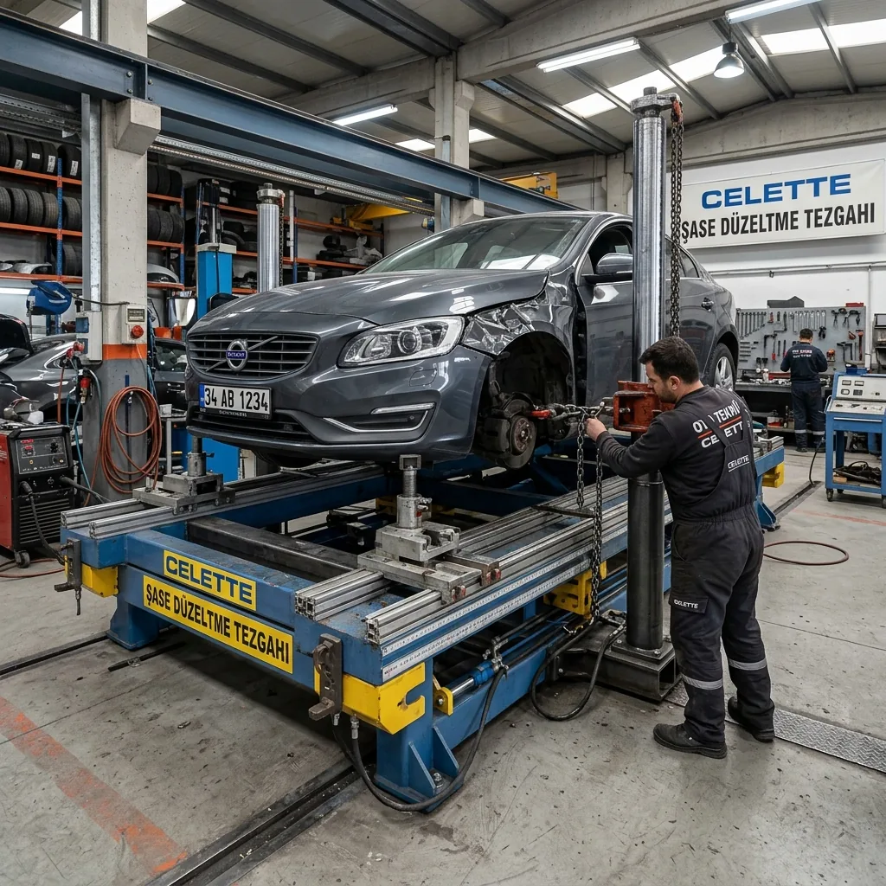

Aracınızın Geometrisini Koruyoruz
Otomobilinizin gövdesi, sürüş güvenliğinizin temel taşıdır. Kaza sonrası oluşan göçük, ezik veya panel deformasyonları sadece estetik değil, yapısal bütünlüğü de tehdit eder. NeTT olarak, Antalya Akdeniz Sanayi Sitesi'ndeki modern tesisimizde, aracınızın şase geometrisini fabrikasyon ölçülerine sadık kalarak onarıyoruz.
Hasar ne boyutta olursa olsun, önceliğimiz her zaman parçayı değiştirmek yerine onarmaktır. Çektirme sistemleri ve milimetrik kalibrasyon cihazlarımızla, sacı esnetmeden orijinal hatlarına geri döndürüyoruz. Bu sayede hem cebinizi koruyor hem de aracınızın "orijinal" statüsünü sürdürmesini sağlıyoruz.

Profesyonel Kaporta İşçiliği
- Şase Onarımı: Şase düzeltme tezgahında milimetrik sapma olmaksızın fabrikasyon ayarlama.
- Panel Düzeltme: Değişim gerektirmeyen hasarlarda parça kurtarma garantisi.
- Alüminyum Kaporta: Lüks araçların alüminyum gövdeleri için özel kaynak ve çekme teknikleri.
- Astar ve Zemin: Onarım sonrası boyaya hazırlıkta korozyon önleyici epoksi astar kullanımı.
Hızlı Onarım, Güvenli Teslimat
Ufak çaplı otopark hasarları ve sürtmeler için aynı gün teslimat seçeneklerimiz bulunmaktadır. Hasarın fotoğraflarını WhatsApp üzerinden bize ileterek anında onarım süresi ve fiyat bilgisi alabilirsiniz.


Antalya'da Kaporta Onarım Süreci
Antalya'da kaporta onarım süreci, aracın hasar durumuna göre değişen profesyonel aşamalardan oluşur. NeTT'te her kaporta onarım, fabrika standartlarına uygun şekilde gerçekleştirilir:
- 1. Hasar Tespiti ve Analiz: Aracın tüm panel geçişleri, şase noktaları ve boya yüzeyi detaylıca kontrol edilir. Hasar raporu hazırlanır.
- 2. Şase Kontrolü ve Düzeltme: Şase düzeltme tezgahında aracın geometrisi ölçülür ve fabrikasyon ölçülere sadık kalınarak düzeltme yapılır.
- 3. Panel Çekme ve Düzeltme: Hasarlı paneller özel çekme sistemleriyle, sacı germeden orijinal hatlarına kavuşturulur.
- 4. Macun ve Astar: Düzeltme sonrası yüzey, macun ile şekillendirilir ve epoksi astar ile koruma altına alınır.
- 5. Boya Hazırlığı: Yüzey zımparalanarak boyaya hazır hale getirilir ve boya öncesi son kontroller yapılır.
- 6. Boya Uygulaması: Fırınlı boya kabininde boyama işlemi tamamlanır.
Antalya'da Şase Düzeltme Neden Önemli?
Kaza sonrası aracın şase (şasi) durumu, sürüş güvenliğinin en kritik unsurudur. Şase deformasyonu, aracın yol tutuşunu, fren performansını ve genel güvenliğini doğrudan etkiler. NeTT'te profesyonel şase düzeltme tezgahı kullanıyoruz. Bu cihaz, aracın tüm ölçüm noktalarını tarayarak milimetrik sapmaları bile tespit eder ve düzeltir. Antalya'da şase düzeltme hizmeti sunan az sayıdaki atölyeden biriyiz.
Antalya Kaporta Onarım Fiyatları
2026 yılında Antalya'da kaporta onarım fiyatları, hasarın türüne ve büyüklüğüne göre değişmektedir. NeTT'te şeffaf fiyatlandırma ve kalite garantisi sunuyoruz:
Kaporta Onarım Fiyat Aralıkları
- Otopark Sürtmesi (Küçük): 2.000 - 5.000 TL
- Panel Düzeltme (Orta): 5.000 - 15.000 TL
- Çamurluk / Kapı Değişimi: 8.000 - 20.000 TL
- Ağır Hasar (Şase Dahil): 25.000 - 100.000 TL
- Alüminyum Onarım (Lüks Araç): 15.000 - 50.000 TL
*Fiyatlar aracın hasar kapsamına göre değişir. Kesin fiyat için WhatsApp'tan fotoğraf gönderin.
NeTT Kaporta Onarım'ın Farkı
Şase Düzeltme Tezgahı
Antalya'da az sayıda bulunan şase düzeltme tezgahı ile aracınız fabrika geometrisine kavuşur.
Parça Koruma Politikası
Mümkün olduğunca orijinal parçayı onarıyoruz, gereksiz değişim yapmıyoruz. Bu size maliyet avantajı sağlar.
Sigorta Desteği
Kaza sonrası sigorta süreçlerinde size destek oluyor, ekspertiz ve hasar yönetiminde yardımcı oluyoruz.
Vale Hizmeti
Lara, Konyaaltı, Muratpaşa ve diğer bölgelerden ücretsiz araç alma ve teslim hizmeti.
Kaporta Onarım Hakkında Sıkça Sorulan Sorular
Antalya'da kaporta onarımı ne kadar sürer?
Küçük hasarlar (otopark sürtmesi gibi) 1-3 gün, orta hasarlar 5-7 gün, ağır hasarlar (şase dahil) ise 2-4 hafta sürebilir. Kesin süre, hasar tespiti sonrası belirlenir. NeTT'te süreç şeffaf yönetilir, müşteri sürekli bilgilendirilir.
Kaporta onarımından sonra boya atılır mı?
Kaporta onarımının ardından boya uygulaması yapılır. Bu iki işlem birlikte yürütüldüğünde en iyi sonuç elde edilir. NeTT'te kaporta ve boya aynı çatı altında, koordineli şekilde yapılır. Bu, renk uyumu ve yüzey kalitesi açısından büyük avantaj sağlar.
Lokal onarım mı yoksa komple boya mı?
Bu, hasarın kapsamına bağlıdır. Tek bir panelde hasar varsa lokal boya yeterlidir. Ancak aracın birden fazla bölümü hasarlıysa veya renk uyumu sorunu varsa, komple boya önerilir. Antalya'da lokal boya daha ekonomik ve hızlıdır. Uzmanlarımız en uygun seçeneği belirler.
Değiştirilen parçalar orijinal mi?
NeTT'te müşterinin tercihine göre orijinal (OEM) veya eşdeğer kalite (eşdeğer parça) kullanılabilir. Orijinal parçalar daha pahalı ancak araç değerini korur. Ayrıca mümkün olduğunca parça onarımı (kurtarma) yöntemini tercih ediyoruz, bu hem çevre dostu hem de ekonomiktir.
HASAR İÇİN TEKLİF ALIN
Kazalı bölgenin fotoğrafını WhatsApp'tan bize gönderin, ücretsiz eksperimizle hemen inceleyip fiyat verelim.